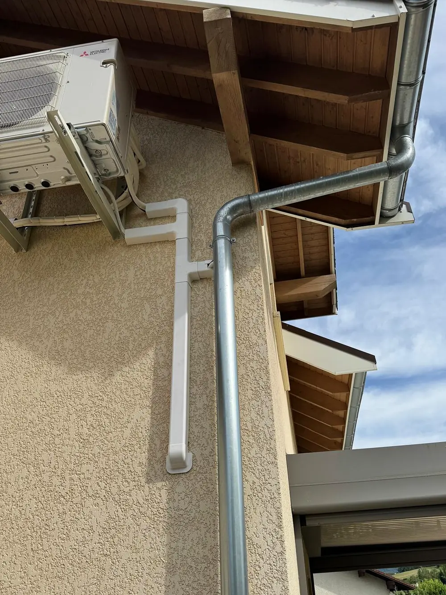
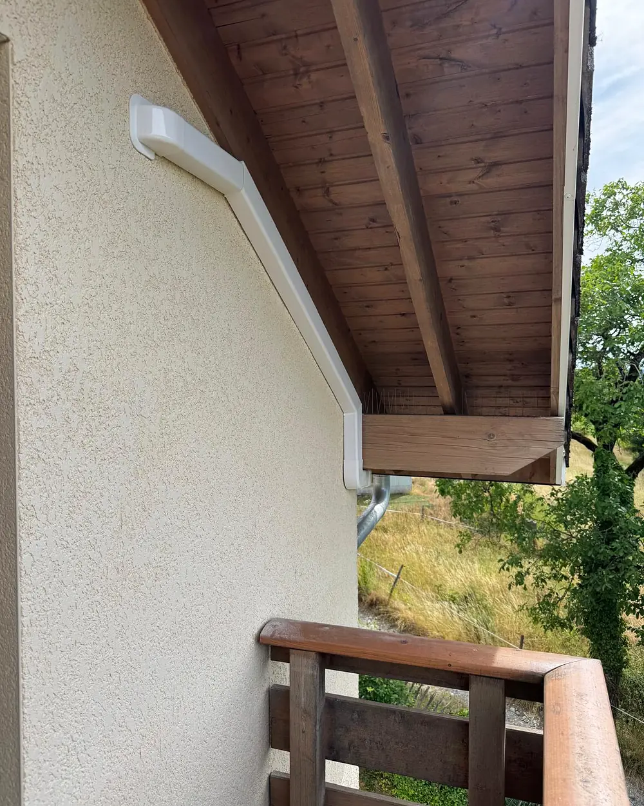
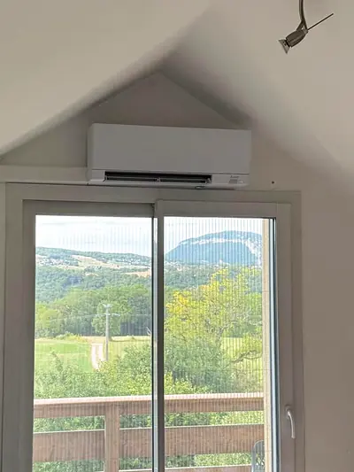
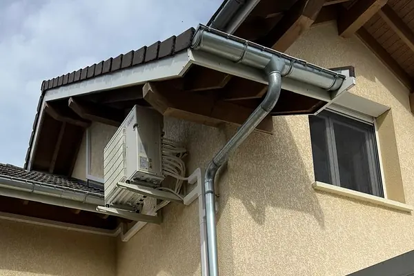

01
Vente
Des climatisations réversibles, principalement Mitsubishi Electric et Mundoclima. [À CONFIRMER — CLIENT : gammes vendues ; vendez-vous sans pose ?]
Les marques que nous posonsChargement de la page…
Vidéo du survol : Qualiclim Sud
Cap sur Fréjus.
Qualiclim Sud arrive àFréjus
Vente et pose de climatisation réversible, sur toute la côte de Fréjus à Cannes.
Le Sud, à la bonne température.
Climatisation réversible · Vente et pose · De Fréjus à Cannes
01Vente et pose
Une chambre sous les toits à rafraîchir l'été, un séjour à chauffer l'hiver. Qualiclim Sud vend et pose des climatisations réversibles, principalement Mitsubishi Electric et Mundoclima, sur toute la côte de Fréjus à Cannes.
Chaque logement pose ses questions. Quelle puissance pour chaque pièce ? Où placer l'unité extérieure ? Faut-il l'accord de la copropriété, ou une déclaration en mairie ? Quel taux de TVA ? Cette page y répond, avec les textes officiels quand il y en a.
Le plus simple reste de nous appeler. Vous préférez commencer seul ? Le simulateur estime la puissance qu'il vous faut, en trois étapes.
02Ce que nous faisons
01
Des climatisations réversibles, principalement Mitsubishi Electric et Mundoclima. [À CONFIRMER — CLIENT : gammes vendues ; vendez-vous sans pose ?]
Les marques que nous posons02
La pose chez vous, de l'unité intérieure à l'unité extérieure, sur toute la côte de Fréjus à Cannes. [À CONFIRMER — CLIENT : types d'installation ; la mise en service est-elle faite par Qualiclim Sud ?]
Les étapes d'une installation
03
De 4 à 70 kW, la réglementation impose un entretien au moins tous les deux ans. [À CONFIRMER — CLIENT : Qualiclim Sud assure-t-il l'entretien ? le dépannage ? sous contrat ?]
L'entretien est-il obligatoire ?
Exemple de consigne
Une climatisation réversible est une pompe à chaleur air-air. L’hiver, elle capte les calories de l’air extérieur et les restitue dans la pièce. L’été, le cycle s’inverse : la chaleur de la pièce part dehors.
Estimer la puissance qu’il vous fautValeurs données en exemple. Le code de l’énergie limite le chauffage d’un logement à 19 °C en moyenne (art. R241-26) et réserve la climatisation aux moments où l’intérieur dépasse 26 °C (art. R241-30).
04Les marques
Principalement Mitsubishi Electric et Mundoclima. Modèles, puissances et garanties : [À CONFIRMER — CLIENT : modèles, puissances et garanties]
Mitsubishi
Mitsubishi Electric
Mundoclima
05Simulateur
Décrivez votre logement, vos pièces et l'emplacement des unités : la pièce se dessine, l'air se met à souffler, la puissance s'affiche. C'est une estimation : un technicien la valide avant tout devis.
06Déroulement
Ce qu'une installation demande, de la première question à l'entretien.
01
Le simulateur donne un ordre de grandeur de la puissance et liste ce que la pose peut demander. Vous préférez en parler ? Appelez-nous au 06 34 49 32 49.
02
La puissance exacte et la pose se vérifient sur place : les murs à traverser, la place de l'unité extérieure, la ligne électrique, l'évacuation de l'eau.
[À CONFIRMER — CLIENT : visite avant le devis ? gratuite ? sous quel délai ?]
03
Le taux de TVA dépend de l'appareil et du logement : vous certifiez ces conditions sur le devis ou la facture. Vous visez une prime CEE (certificats d'économies d'énergie) ? Acceptez l'offre du fournisseur d'énergie avant de signer.
[À CONFIRMER — CLIENT : délai du devis, gratuité, validité] · Vos conditions de TVA
04
La mise en service d'une climatisation en deux unités (split) touche au fluide frigorigène : elle est réservée aux entreprises titulaires d'une attestation de capacité.
[À CONFIRMER — CLIENT : mise en service par Qualiclim Sud ? numéro d'attestation de capacité ; durée d'une pose]
05
De 4 à 70 kW, le premier entretien a lieu au plus tard deux ans après la pose.
[À CONFIRMER — CLIENT : entretien, dépannage, contrat ?] · L'entretien est-il obligatoire ?
07Notre secteur
Photos aériennes et relief : IGN — BD ORTHO®, RGE ALTI® · Fonds marins : EMODnet · Rivage : © OpenStreetMap · Relief accentué
Notre dépôt
Nous posons sur toute la côte, de Fréjus à Cannes : Fréjus, Saint-Raphaël et Agay, Théoule-sur-Mer, Mandelieu-la-Napoule et Cannes.
Votre commune n'y est pas ? Appelez-nous : nous vous dirons si nous pouvons venir chez vous.
Appeler · 06 34 49 32 4908Avant la pose
Cinq questions à régler avant de signer un devis. Les réponses viennent des textes officiels ; ces règles évoluent, la date de vérification figure sous chaque réponse.
01
Oui, si l'unité extérieure va en façade, sur un balcon ou sur le toit : elle touche aux parties communes ou à l'aspect de l'immeuble. L'assemblée générale doit l'autoriser, à la majorité des voix de tous les copropriétaires (article 25 de la loi du 10 juillet 1965). Si le projet n'obtient pas cette majorité mais recueille au moins le tiers de ces voix, l'assemblée revote aussitôt, à la majorité simple.
Sources : service-public.gouv.fr, fiche F31513 · loi du 10 juillet 1965, art. 25-1. Vérifié le 5 octobre 2026.
02
En général, oui : un boîtier de climatisation ou de pompe à chaleur qui modifie l'aspect extérieur demande une déclaration préalable. Depuis mars 2026, une pompe à chaleur en façade qui n'est visible ni depuis la rue ou un autre lieu public, ni depuis une maison ou un immeuble qui a vue sur elle, en est dispensée, sauf en secteur protégé (abords d'un monument historique, site classé…). Le plan local d'urbanisme et le règlement de copropriété peuvent ajouter leurs règles.
Sources : service-public.gouv.fr, fiche F17578 · décret n° 2026-117 du 20 février 2026, art. 16. Vérifié le 5 octobre 2026.
03
Oui, avec l'accord écrit de votre propriétaire, avant la pose. La loi interdit au locataire de transformer le logement ou ses équipements sans cet accord. La règle où le silence du propriétaire pendant deux mois vaut accord ne couvre qu'une liste limitée de travaux de rénovation énergétique, qui exclut ceux qui changent l'aspect extérieur, touchent aux parties communes ou à la structure, ou demandent une déclaration en mairie. Pour une climatisation, comptez sur un accord écrit.
Sources : loi du 6 juillet 1989, art. 7 f · décret n° 2022-1026, art. 1er · fiche F1874. Vérifié le 5 octobre 2026.
04
Oui, depuis le 18 juillet 2026, si l'entreprise fournit et pose l'appareil. Il faut un logement achevé depuis au moins deux ans, qui reste un logement après les travaux. L'appareil doit être fixe et connectable à un réseau numérique pour programmer ses températures par plages horaires, en chaud comme en froid. Jusqu'à 12 kW : classe A++ au moins en chaud et en froid (A+ pour un multi-split). Son fluide doit respecter le règlement européen à la date du devis. Vous certifiez ces conditions sur le devis ou la facture.
Acheté seul, l'appareil reste à 20 %. [À CONFIRMER — CLIENT : modèles posés, classes énergétiques, fluide, connectivité]
Sources : arrêté du 13 juillet 2026 · CGI, art. 278-0 bis A · fiche F23568. Vérifié le 5 octobre 2026.
05
Pas de MaPrimeRénov' pour une climatisation réversible posée seule. Une prime CEE (certificats d'économies d'énergie), versée par un fournisseur d'énergie, peut exister. Ses conditions portent sur l'appareil, le logement et l'entreprise qui pose : vérifiez-les avec le fournisseur d'énergie. Acceptez son offre avant de signer le devis, jamais après.
[À CONFIRMER — CLIENT : accompagnement de la prime CEE]
Sources : fiche F35083 · fiche F35584 · fiche CEE BAR-TH-129. Vérifié le 5 octobre 2026.
09Réalisations
Un chantier réel, en quatre photos. Dedans, l'unité murale au-dessus de la baie vitrée. Dehors, le groupe fixé en hauteur et les liaisons rangées sous goulotte.

Agrandir la photo
Agrandir la photoPhotos d'un chantier de Qualiclim Sud, publiées avec l'accord des propriétaires. Ni le lieu ni leur nom ne sont indiqués.
10Questions
Des réponses courtes. Quand une règle vient d'un texte officiel, la source est indiquée.
Une autre question ? 06 34 49 32 49Elle se calcule pièce par pièce. Comptent la surface, la hauteur sous plafond, l'isolation, l'exposition au soleil, les grandes baies vitrées, et le fait d'être au dernier étage ou sous les combles. Le simulateur tient compte de tout cela et donne un ordre de grandeur en kilowatts. Seul un relevé chez vous fixe la bonne puissance.
Le prix dépend de votre projet : le nombre de pièces, la puissance, la gamme de l'appareil, la distance entre les deux unités, l'accès à l'unité extérieure, le mur à traverser, la ligne électrique et l'évacuation de l'eau. Le taux de TVA compte aussi : il dépend de l'appareil et du logement. Le simulateur liste ce qui s'applique chez vous.
[À CONFIRMER — CLIENT : fourchettes de prix d'une pose]
Dépannage, réparation, entretien : [À CONFIRMER — CLIENT : taux horaire TTC, décompte du temps, forfaits TTC, frais de déplacement, devis gratuit ou payant] Nos conditions de prix
Une climatisation réversible est une pompe à chaleur air-air réversible : deux noms pour le même appareil. Il rafraîchit vos pièces en été et les chauffe en hiver. Les textes officiels disent « pompe à chaleur air/air réversible », le langage courant « clim réversible ». Sur une fiche produit, c'est le mot « réversible » qui compte : il dit que l'appareil fait les deux.
Source : arrêté du 13 juillet 2026. Vérifié le 5 octobre 2026.
Oui, si sa puissance nominale est comprise entre 4 et 70 kW : au moins un entretien tous les deux ans, le premier au plus tard deux ans après la pose. Il comprend la vérification de l'appareil, un contrôle d'étanchéité du circuit (sauf s'il est déjà contrôlé au titre du règlement européen), un nettoyage si besoin, des réglages et des conseils d'usage. L'occupant le fait faire, sauf clause contraire du bail. L'entreprise remet une attestation dans les 15 jours. Sous 4 kW, cet entretien n'est pas obligatoire.
[À CONFIRMER — CLIENT : entretien, dépannage, contrat ?]
Source : code de l'environnement, art. R. 224-44 à R. 224-44-4. Vérifié le 5 octobre 2026.
Tout ce qui touche au fluide frigorigène est réservé aux entreprises titulaires d'une attestation de capacité. C'est le cas de la mise en service d'une climatisation en deux unités (split), de son entretien, de sa réparation et du contrôle de son étanchéité. Un organisme agréé délivre cette attestation pour cinq ans au plus, une par établissement. Un split préchargé ne se vend d'ailleurs à un particulier qu'avec un contrat de mise en service signé avec une entreprise attestée.
[À CONFIRMER — CLIENT : attestation de capacité de Qualiclim Sud : numéro, organisme, validité]
Sources : code de l'environnement, art. R. 543-76 à R. 543-99 · règlement (UE) 2024/573, art. 11. Vérifié le 5 octobre 2026.
Non, pas un appareil déjà posé. Le règlement européen sur les gaz fluorés interdit, à partir du 1er janvier 2029, de mettre sur le marché européen des climatisations air-air neuves en deux blocs (split), de 12 kW au plus, qui utilisent un fluide comme le R32, sauf exigence de sécurité. Les appareils déjà posés restent utilisables et réparables, et le R32 peut encore servir à les recharger. À quantité égale, une fuite de R32 pèse environ trois fois moins sur le climat qu'une fuite de R410A.
Source : règlement (UE) 2024/573, art. 13 et annexes I et IV. Vérifié le 5 octobre 2026.
Elle ne doit pas. Le code de la santé publique interdit tout bruit qui, par sa durée, sa répétition ou son intensité, trouble la tranquillité du voisinage, y compris celui d'un appareil dont on a la garde. L'emplacement de l'unité extérieure se choisit donc aussi pour vos voisins.
Source : code de la santé publique, art. R. 1336-5. Vérifié le 5 octobre 2026.
Notre dépôt est à Fréjus. Nous posons sur toute la côte, de Fréjus à Cannes : Fréjus, Saint-Raphaël et Agay, Théoule-sur-Mer, Mandelieu-la-Napoule et Cannes. Votre commune n'y est pas ? Appelez-nous au 06 34 49 32 49 : nous vous dirons si nous pouvons venir chez vous.
11Contact
Le plus simple : nous appeler. Vous préférez écrire ? Laissez-nous quelques mots, nous vous répondons.
Appeler06 34 49 32 49 contact@qualiclimsud.fr